Anglais professionnel : Habitat
Champ professionnel Habitat. Seize mots anglais du métier, outils, objets et gestes de tous les jours. Ressource en libre accès.
Quatre étapes : du français à l'anglais, écouter et choisir, associer, compléter une phrase au travail. Le bouton « Écouter » lit le mot en anglais britannique.
Liste de vocabulaire
| Image | Français | English | Audio |
|---|---|---|---|
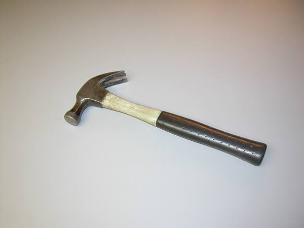 | le marteau | hammer | |
 | le tournevis | screwdriver | |
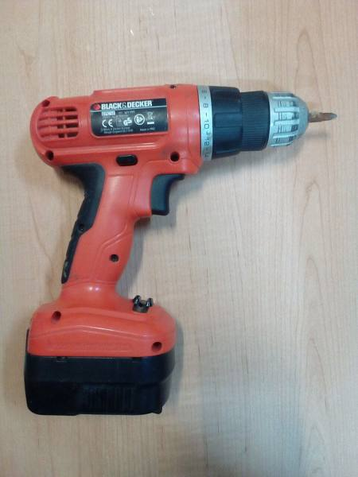 | la perceuse | drill | |
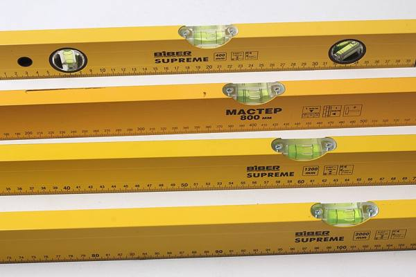 | le niveau à bulle | spirit level | |
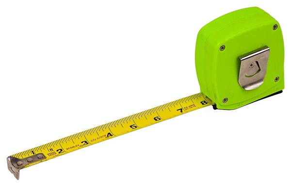 | le mètre ruban | tape measure | |
 | la scie | saw | |
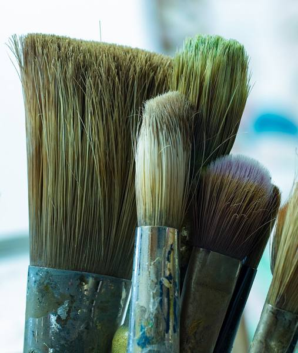 | le pinceau | paintbrush | |
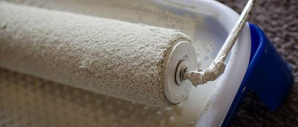 | le rouleau à peinture | paint roller | |
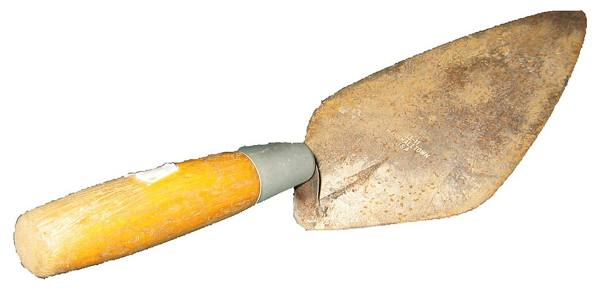 | la truelle | trowel | |
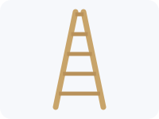 | l'échelle | ladder | |
 | le seau | bucket | |
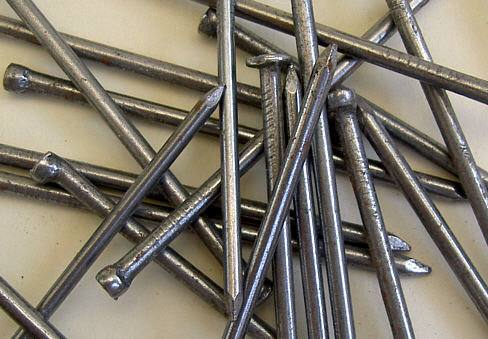 | le clou | nail | |
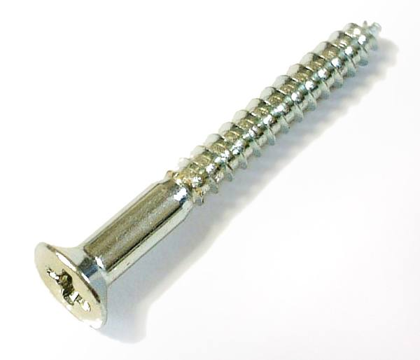 | la vis | screw | |
 | le papier de verre | sandpaper | |
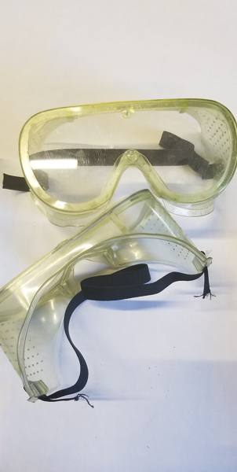 | les lunettes de protection | safety goggles | |
 | la brouette | wheelbarrow |
Corrigé pour le professeur : phrases au travail
- Hit the nail with the ________. (hammer)
- Check the shelf is straight with the ________. (spirit level)
- Climb the ________ carefully. (ladder)
- Measure the wall with the ________. (tape measure)
- Put on your ________ to protect your eyes. (safety goggles)
- Carry the sand in the ________. (wheelbarrow)
Dans les étapes 1, 2 et 3, la bonne réponse correspond à la ligne de la liste de vocabulaire.
Crédits des images
Photos sous licence libre, issues de Wikimedia Commons, redimensionnées pour le téléphone. Dessins originaux pour les gestes et les notions.
- le marteau (hammer) : photo de Shakespeare at en.wikipedia, licence CC BY-SA 3.0, page du fichier sur Wikimedia Commons.
- le tournevis (screwdriver) : photo de 多多123, licence CC BY 4.0, page du fichier sur Wikimedia Commons.
- la perceuse (drill) : photo de Fructibus, licence CC0, page du fichier sur Wikimedia Commons.
- le niveau à bulle (spirit level) : photo de Dmitry Makeev, licence CC BY-SA 4.0, page du fichier sur Wikimedia Commons.
- le mètre ruban (tape measure) : photo de Evan-Amos, licence Public domain, page du fichier sur Wikimedia Commons.
- la scie (saw) : photo de Mnemosine, licence Public domain, page du fichier sur Wikimedia Commons.
- le pinceau (paintbrush) : photo de Rhododendrites, licence CC BY-SA 4.0, page du fichier sur Wikimedia Commons.
- le rouleau à peinture (paint roller) : photo de r. nial bradshaw, licence CC BY 2.0, page du fichier sur Wikimedia Commons.
- la truelle (trowel) : photo de Mike Lupinacci, licence CC BY-SA 3.0, page du fichier sur Wikimedia Commons.
- l'échelle (ladder) : dessin original, Itinéraires et destinations, CC BY-NC-SA 4.0.
- le seau (bucket) : photo de MarlonBSB, licence Public domain, page du fichier sur Wikimedia Commons.
- le clou (nail) : photo de Walter J. Pilsak, licence CC BY-SA 3.0, page du fichier sur Wikimedia Commons.
- la vis (screw) : photo de Haragayato, licence CC BY-SA 2.5, page du fichier sur Wikimedia Commons.
- le papier de verre (sandpaper) : photo de Simon Eugster, licence CC BY-SA 3.0, page du fichier sur Wikimedia Commons.
- les lunettes de protection (safety goggles) : photo de DJSparky, licence CC BY-SA 4.0, page du fichier sur Wikimedia Commons.
- la brouette (wheelbarrow) : photo de Oto Zapletal, licence CC BY 4.0, page du fichier sur Wikimedia Commons.
Fiche de vocabulaire à imprimer
Gros caractères (16 points minimum), en trois formats :